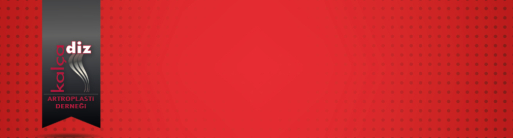

Değerli Üyelerimiz;
Pandemi tedbirleri kapsamında alınan önlemler gereğince Genel Kurul ilanımızı 12 Nisan 2021 ve ikinci toplantı19 Nisan 2021'da yapılacak şekilde duyurmuş, ancak Içisleri Bakanlığınca alınan erteleme kararları gereğince ikinci toplantı tarihini ertelemek zorunda kalmıştık. Son olarak 01.06.2021 tarihinde İçişleri Bakanlığı tarafından yayınlanan Haziran Ayı Normalleşme Tedbirleri Genelgesi kapsamınca genel kurullar 15 Haziran 2021 tarihine kadar ertelenmiştir. Derneğimiz Genel Kurulunun 19 Haziran 2021 Cumartesi günü 11:00 ile 14:30 saatleri arasında TOTBİD Genel Merkez, Bayraktar Mahallesi İkizdere Sokak No:21/12 G.O.P. Ankara'da yapılacağını bilgilerinize sunar, teşriflerinizi rica ederiz.
Olağan Genel Kurul Toplantı Gündemi aşağıda bilgilerinize sunulmuştur.
Gündem Maddeleri:
- Açılış
- Saygı Duruşu ve İstiklal Marşı
- Divan Kurulu seçimi
- Yönetim kurulu faaliyet raporunun okunması
- Mali Raporun okunması
- Denetim kurulu raporunun okunması
- Yönetim Kurulunun ibrası
- Denetim Kurulunun ibrası
- Yönetim ve Denetim Kurulu adayları başvuruları
- Yeni yönetim kurulu ve Denetim Kurulu seçimlerinin yapılması.
- Dilek ve temenniler
